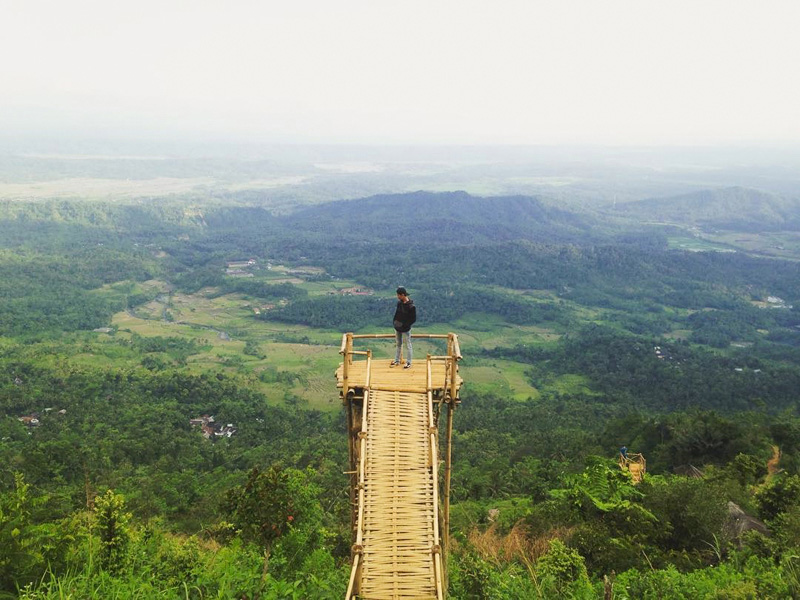

Puncak Sendaren sempat menjadi tempat wisata di Purbalingga yang cukup ramai dikunjungi, bukan hanya dari pengunjung yang datang dari sekitar Jawa Tengah saja. Karena menyajikan beberapa spot foto, sebagai pelengkap dari indahnya pemandangan dari Puncak Sendaren. Hanya sayangnya saat ini spot foto yang ada tidak terawat dengan baik, dan tampak sedikit berbahaya. Hal tersebut diakibatkan hampir semua spot yang ada terbuat dari bambu, yang kondisinya sekarang sudah mulai rapuh. Akan tetapi Puncak Sendaren selalu menjadi tujuan camping bagi para pendaki yang ingin berkemah dan menikmati pemandangan alam yang sangat cantik. Menikmati suasana alam sambil menghirup udara segar khas pegunungan bisa dijadikan alternatif akhir pekan kamu, sambil melepas penat akibat kepadatan aktifitas sehari-hari.
